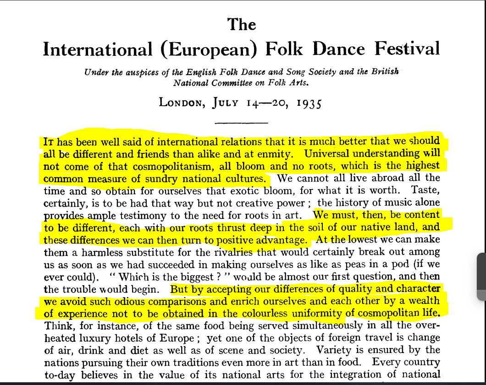
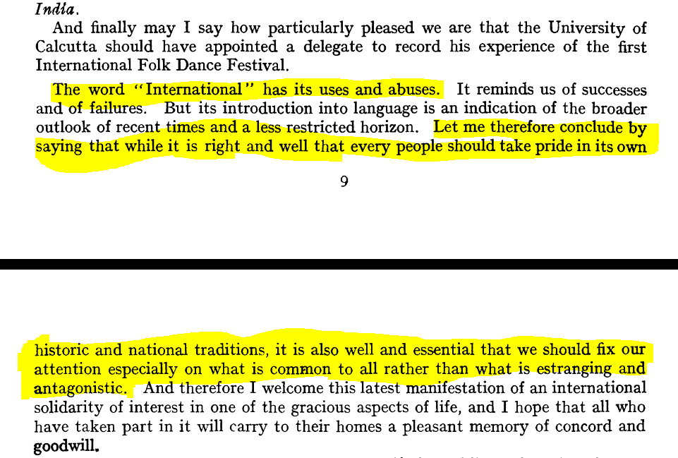

London
1. International European Folk Dance Festival (1935)
The International European Folk Dance Festival in 1935 was a remarkable event that brought together participants from many different European countries, showcasing a diverse array of folk dances. It aimed at fostering understanding, friendship, and cultural exchange among nations through the common interest of folk dance. The festival also aimed to demonstrate the social significance of folk dance in contemporary society and to encourage the comparative study of these dances but also to promote understanding between dances:
Participants from countries such as
Austria, Bulgaria, Denmark, France, Latvia, Lithuania, Netherlands, Norway, Poland, Romania, Spain (Catalonia), Germany, Sweden, Hungary, Switzerland, Italy, and 4 countries from the U.S.S.R.
showcased their unique traditional dances, totaling around 250 performances. The event not only highlighted the richness and variety of each country's cultural heritage but also facilitated interactions, sharing of experiences, and knowledge about diverse folk traditions.
Cosmopolitanism

In the text provided, the author presents an argument that celebrates differences between cultures as distinct from the concept of cosmopolitanism. The author suggests that embracing and cherishing the uniqueness of each culture is preferable to a cosmopolitan ideal that tends toward a homogeneous, uniform existence.
The author emphasizes the importance of roots and traditions deeply embedded in one's native land. According to the text, these roots provide a foundation that nurtures creativity and authenticity in art and life. Celebrating differences, in this context, involves acknowledging and valuing the distinct qualities and characteristics that various cultures contribute to the global community. The text argues that these differences not only prevent harmful comparisons but also enrich individuals and societies with a wealth of diverse experiences.
Comparatively, Kwame Anthony Appiah, a prominent philosopher, presents a different perspective on cosmopolitanism. Appiah views cosmopolitanism as an ideology that embraces diversity while promoting a shared understanding and empathy among people from various backgrounds. Unlike the author's viewpoint in the text, Appiah doesn't necessarily perceive cosmopolitanism as a force that erases cultural differences or leads to a uniform global identity. Instead, he advocates for a cosmopolitan ethic that recognizes and respects cultural diversity while promoting dialogue, understanding, and cooperation among different cultures.

A welcoming speach to India, from Mr.Kennedy, director of performances
Appiah's cosmopolitanism doesn't aim to eliminate differences or root identities but rather encourages individuals to engage with diverse perspectives, ideas, and traditions while recognizing the common humanity that transcends cultural boundaries. He emphasizes the importance of ethical and moral considerations in navigating the complexities of a globalized world, promoting mutual respect, and fostering a sense of shared responsibility toward one another.
In summary, the author in the text highlights the value of preserving individual cultural identities and differences as a means of enriching the global community. On the other hand, Kwame Anthony Appiah's cosmopolitanism advocates for embracing diversity while fostering understanding and cooperation among diverse cultures, aiming for a more interconnected yet respectful and inclusive world. Both viewpoints accentuate the significance of acknowledging differences but approach the idea of cultural exchange and coexistence from slightly different perspectives.